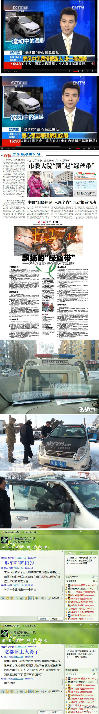

同问陈副局长：爱心别过江桥，呼兰不要温暖?呼兰区是不是哈尔滨市神圣领土不可分割的一部分？怪也怪这位绿丝带车主，你跑呼兰献什么爱心，别说你这是非营运车，就是哈尔滨的正规手续营运车你敢去学院路往市区带乘客都有不明身份的人打你、砸你车，你好好的在市区行了，还上人家呼兰去献爱心去了，找打
@哈尔滨新闻网:
尽管市委号召党报提倡、央视报道、爱心市民参与、受益群众叫好，但家住江北呼兰，想搭个温暖便车的亲，恐怕要再等等了。昨天有绿丝带车主在江北顺了一男子被带进埋伏圈，呼兰交通局认定“非法营运”，扯烂衣服滞留车辆。副局长陈永忠：“爱心活动应该有个范围，在你们哈尔滨搞就够用了，延伸这么远？”
- 